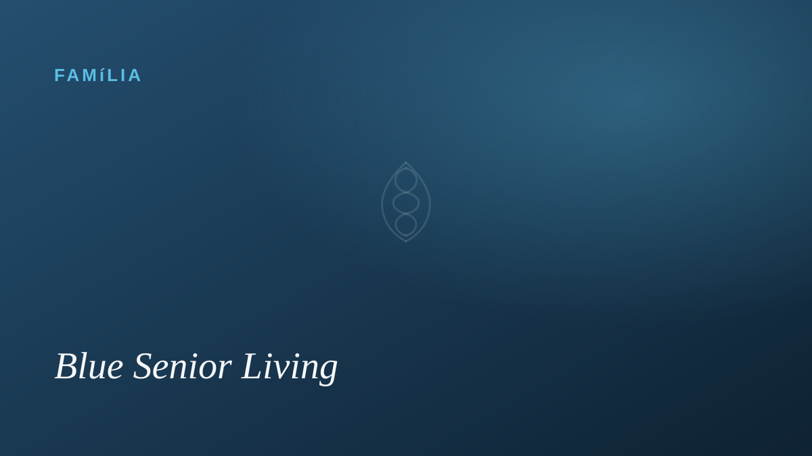
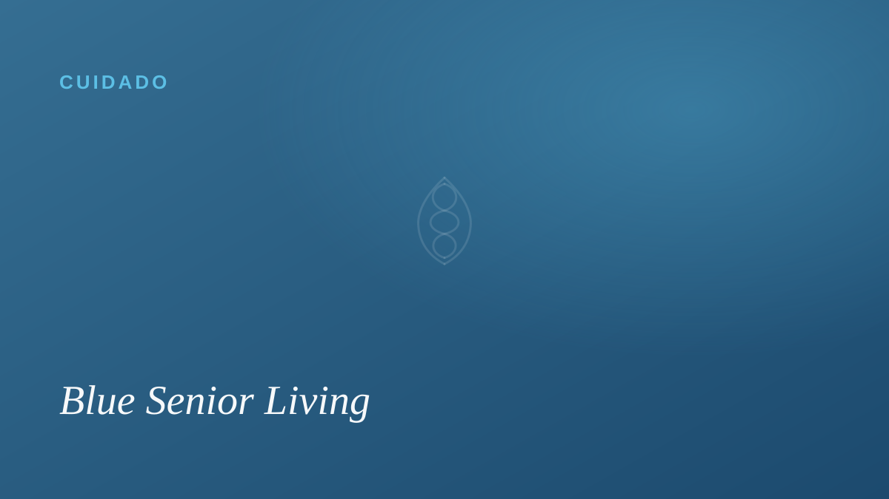

Como saber se é hora de considerar um residencial para idosos
Sinais sutis no dia a dia, a conversa em família e como decidir com amor — e sem culpa — o melhor momento para buscar apoio.
Ler conteúdo →Conteúdos
Textos calorosos e sem jargão para ajudar a sua família a decidir e a cuidar melhor.

Sinais sutis no dia a dia, a conversa em família e como decidir com amor — e sem culpa — o melhor momento para buscar apoio.
Ler conteúdo →
Um guia prático e honesto do que reparar na hora da visita — das pessoas e dos cuidados aos detalhes que um bom lar não esconde.
Ler conteúdo →
Nas regiões onde mais se vive — e melhor — a longevidade não é sorte. Entenda os hábitos simples que inspiram o nosso jeito de cuidar.
Ler conteúdo →